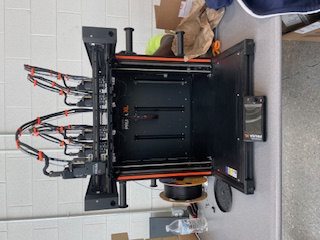

Process Improvement
Time studies, waste identification, workflow analysis, and continuous improvement.
Industrial & Systems Engineering · IntelliMake S7
This live learning center shows how the Original Prusa XL prints custom cards, fixtures, and multi-material parts — then hands the job to the IntelliMake factory for handling, laser marking, inspection, and shipping.
Combining time studies, layout optimization, data analysis, automation concepts, and human-centered problem solving.
About Me
I am a rising senior studying Industrial & Systems Engineering. My interests include manufacturing, process improvement, digital automation, layout optimization, data-driven decision making, and the use of technology to make systems safer, faster, and more efficient.
Through engineering coursework and hands-on industry experience, I have worked with time studies, facility layouts, material flow, automation concepts, AutoCAD, MATLAB, and continuous-improvement thinking.
Core Skills
A practical mix of analytical, technical, and problem-solving skills for industrial engineering environments.
Time studies, waste identification, workflow analysis, and continuous improvement.
Facility layout review, material-flow improvements, spaghetti diagrams, and floor planning.
Data analysis, regression, programming fundamentals, plotting, and engineering calculations.
AGV/AMR research, digital automation, workflow automation, and technology evaluation.
Updating layouts, communicating current-state and future-state designs, and visual planning.
Presentations, engineering summaries, supplier questions, documentation, and visual storytelling.
Selected Work
Reviewed current-state production layouts, updated AutoCAD drawings, evaluated material movement, and developed improved layouts intended to reduce unnecessary travel and support more efficient operations.
Explored the use of automated guided vehicles and autonomous mobile robots for material transport in an assembly environment.
Collected and organized task-time observations to understand process performance, compare cycle times, and identify improvement opportunities.
Used MATLAB for engineering calculations, regression, symbolic math, root-finding, data visualization, and custom functions.
Digital Automation
This website was developed with generative AI assistance and deployed as a live web project. The workflow demonstrates how modern digital tools can accelerate development while still requiring human direction, review, and testing.
Define the goal, visual style, content, and functionality.
Generate and refine responsive HTML, CSS, and JavaScript.
Test the site and deploy the project files to Netlify.
Interactive Feature
Enter a current cycle time and an improved cycle time to calculate the percent reduction in cycle time.
IMMERSIVE LEARNING · PHASE 1
Explore the entire IntelliMake cell in an isometric educational digital twin. Select a station to inspect it; select S7 to zoom into the five-toolhead Prusa XL. Equipment positions and movement are schematic, not a validated machine layout or robot program.

Future additive manufacturing station: five independent Nextruders and a toolchanger for multi-material polymer printing.
STATION 7 · HARDWARE LAB
Tap or hover over labeled hardware to explore its function. This illustration is conceptual; use the actual printer and manufacturer manual to confirm component locations.

SELECT COMPONENT 1–5
Each toolhead can carry its own filament and nozzle. The ToolChanger docks and selects tools during a multi-material job. Changes still take time, but reduce the need to purge material through a shared nozzle.
Verified general hardware concepts: Prusa XL support. Actual configuration shown: lab photograph.
Each independent Nextruder can remain loaded with a different compatible filament. Automatic tool switching reduces color/material purging compared with some single-nozzle approaches; it does not eliminate tool-change time or guarantee flawless prints.
Check installed tools and firmware, follow the manufacturer setup wizard, verify loadcell and filament sensing, and run required tool-offset/calibration procedures for the actual XL revision. Only authorized users should operate lab equipment.
Match the filament, nozzle, print sheet, and PrusaSlicer profile; inspect docks and toolhead connections; perform the manufacturer-prescribed cleaning and lubrication intervals. Confirm each action against the official five-tool manual.
PRODUCT SHOWCASE
Explore illustrative applications and official video resources. These are examples of manufacturing possibilities, not claims that the school's equipment has produced each item.
Layered geometry and sharp angles reveal slicing and first-layer quality.
Explore official Prusa videos ↗Fine surface detail, support strategies and controlled nozzle movement.
Explore print guidance ↗Separate tools can combine approved rigid, flexible or support materials.
See XL configurations ↗SIGNATURE INTELLIMAKE PRODUCT
Current production: a metal card blank travels from receiving through robotic handling and the laser-engraving station before inspection and packing. S7 does not print metal cards. In the future extension, S7 may print a polymer card holder, fixture, or compatible customized polymer part for downstream processing.
Watch both routes in the cell ↗LEARNING ARCADE
Short checkpoints reinforce factory flow, Prusa hardware, and safe operation. Progress is tracked during this visit only.
This educational quiz does not certify safe machine operation. Instructor authorization and official procedures are still required.
Machine Agentification Learning Center
A living technical learning resource for understanding the Original Prusa XL, its role in the IntelliMake Phase 1 Factory, its major subsystems, operating workflow, safety considerations, controls, and future automation opportunities.
The Original Prusa XL is a large-format fused-filament 3D printer built around a CoreXY motion system. It uses the Nextruder direct-drive extruder, a 16-segment heatbed, removable magnetic print sheets, automatic mesh bed leveling, and can be configured with one, two, or five toolheads.
For IntelliMake, additive manufacturing can turn a digital customer design into a physical customized component. In a connected production system, that part can then move to downstream handling, laser processing, inspection, shipping, and packing.
Hands-on learning · manufacturer-guided
Follow the actual sequence on this page. Choose the printer's delivered configuration before starting. This walkthrough describes an assembled XL that requires final setup, not a semi-assembled kit or an upgrade conversion. For those versions, use the matching manufacturer manual. Never operate without lab authorization and supervision.
02 • Factory Integration
The course factory architecture identifies the Prusa 3D Printer as station S7 and shows it as part of a future personalized-product extension. The diagram below is course-provided system context; machine-specific facts elsewhere on this page are verified against Prusa documentation.
IntelliMake digital twin · course architecture
Click a station to learn its purpose and see the relevant lab photo. Select a workflow to animate its proposed progression. The original diagram below is the authoritative course architecture; this explorer is an educational model.

Factory station
Choose a station above to view its role and equipment photo.
Select a workflow and press Play route.

Product Studio · Live Simulation
Type a name and watch the Prusa XL job update in real time. The XL is an FFF/FDM printer: it melts 1.75 mm filament, it does not mill solid metal plate. Some specialty filaments may provide a metallic appearance, subject to verified compatibility that polishes to a metallic card, plus dual-color logos and QR relief with a second toolhead.
Industrial & Systems Engineer
IntelliMake · Wayne State
What the machine can actually build
Filter by job type. Each card is a real FDM capability of the Original Prusa XL, not a metal mill or CNC punch.
Metallic-looking polymer prototype cards; actual filament suitability and post-processing require verification.
Raised lettering and recessed QR pads for asset tags, lab badges, and kit labels.
Dual or five-head ToolChanger prints a rigid body in one Nextruder and a logo/inlay in another — no paint step.
PETG or ABS-like filaments for locating fixtures that hold parts during laser marking or inspection.
Custom S6 robot fingertips sized to a business-card stack or a unique prototype geometry.
Print-in-place trays so a batch of cards stays oriented for the robot pick.
A second tool can lay support in a different material so overhangs on badges and housings stay clean.
TPU living hinge or gasket on a PETG body in one programmed job.
One-piece covers, ducts, and display stands that would otherwise be split across several printers.
Many small cards tiled across the 360×360 bed, using segmented heatbed tiles only where parts sit.
Snap-fits, bosses, and click-together enclosures in PLA or PETG before any metal tooling is cut.
Quick dimensional checks for the inspection station after laser marking.
Cannot do on this machine: solid-metal stamping, CNC engraving of sheet metal, or powder-bed metal AM. Downstream S4/S5 lasers can add marks after the polymer/metal-composite card is printed.
NEW · IntelliMake Production Cell / Interactive Digital Twin
Follow a moving workpiece through the full station layout. The robotic arms, conveyors, laser and printer are animated teaching illustrations, not live equipment telemetry. Select either process to see the correct route.
Layout based on the course-provided IntelliMake Phase 1 Factory diagram. The Prusa XL at S7 is a future extension; this visual simulation does not establish that robot handoffs, autonomous laser processing or machine-to-machine interfaces have been tested.
Digital automation · station-to-station
This simulation follows one card order through IntelliMake. Status chips update as S7 prints, S6 handles, lasers mark, and shipping closes the loop.
Press Start run, or design a card and send it here.
03 • Major Components
The XY motion system positions the active toolhead across the print area while the Z system controls layer height.
A direct-drive extrusion system feeds 1.75 mm filament into the hotend so material can be melted and deposited accurately.
Sixteen individually controlled heatbed tiles support a large print area while helping manage heat efficiently.
The nozzle/loadcell system supports automatic first-layer calibration and mesh bed leveling over the active print area.
Multi-tool XL configurations can dock and select independent Nextruders, enabling multi-material or multi-nozzle workflows.
The printer coordinates motion, heaters, sensors and job execution through its electronics, firmware, display and supported network/USB workflow.
04 • Interactive Teaching Tool
Use the controls to walk through a simplified printing cycle. This is an educational schematic, not a substitute for the official operating or safety manual.
05 • Specifications & Capabilities
Specifications shown are for the Original Prusa XL platform and should be checked against the specific lab machine, installed accessories, nozzle and material before operation.
06 • Basic Operating Sequence
Create or obtain a printable 3D model and inspect its geometry and intended material.
Use PrusaSlicer with the correct Original Prusa XL profile, tool configuration, nozzle and material settings to generate G-code.
Verify the correct print sheet, filament, nozzle/tool configuration and a clean, unobstructed machine.
Transfer the G-code using the supported workflow and verify the printer/job information before starting.
The printer performs the required preparation, heating and calibration behavior for the configured job.
Observe the first layer and machine status. Do not bypass warnings or place hands near moving/hot components.
Allow appropriate cooling, remove the finished part using the correct sheet procedure, and leave the machine ready for the next user.
07 • Safety
08 • Controls, Communication & Programming
PrusaSlicer converts a 3D model and selected process settings into G-code. The XL firmware interprets those instructions to coordinate motion, extrusion, heating and tool behavior. Jobs can use USB and supported network workflows; exact connectivity should be verified on the school's machine.
09 • Limitations & Open Questions
These items are intentionally left as lab-verification questions rather than assumptions.
Is the IntelliMake unit currently single-tool, dual-head, or five-head? Which nozzle sizes and materials are installed?
Is the lab XL connected by Ethernet, Wi-Fi, Prusa Connect/PrusaLink, USB only, or another controlled workflow?
What approved interface will IntelliMake use to trigger jobs, obtain status, or coordinate S7 with S6 robot handling?
How will a completed print be detected, released, gripped, oriented and transferred safely to the downstream process?
10 • Manuals, Videos & Resources
Central support hub for the Original Prusa XL, including setup, calibration, operation, maintenance and troubleshooting.
Open official XL support ↗Official assembly and upgrade documentation for single-tool, dual-head and five-head configurations.
View assembly manuals ↗Use the current handbook for manufacturer instructions, operating guidance and safety information.
Find XL handbook ↗Official maintenance guidance for keeping the Original Prusa XL in serviceable condition.
Maintenance guide ↗Shows how the XL platform adds ToolChanger hardware and a second Nextruder.
View upgrade guide ↗Official guide documenting the five-head upgrade architecture and first-run process.
View upgrade guide ↗Primary technical source: Prusa Research official documentation. Factory-integration source: IntelliMake Phase 1 Factory course diagram. Last content review: October 2026.
Sources, verification & credits
Primary technical claims and assembly stages use manufacturer guidance. IntelliMake station roles and production scenarios are derived from the supplied course diagram. All machine and factory animations are schematic demonstrations, not evidence of validated integration.
Overview, calibration, use, troubleshooting, maintenance and documentation.
Choose assembled or semi-assembled instructions for Single Tool, Dual Head or Five Head.
Safety, first run, controls and operation.
Inspection and maintenance; confirm applicability to installed hardware.
Remote and local-network concepts; actual lab configuration remains to be verified.
IntelliMake Phase 1 Factory: Autonomous Production Demonstrator. Source of station numbering, production scenarios and S7 future-extension designation.
Student-supplied actual Prusa XL photograph used for anatomy; AI-generated conceptual factory image replaces the cluttered workstation photographs. The concept image does not depict verified automation.
Let's Connect
I am continuing to develop my experience in industrial engineering, manufacturing systems, digital automation, and process improvement.